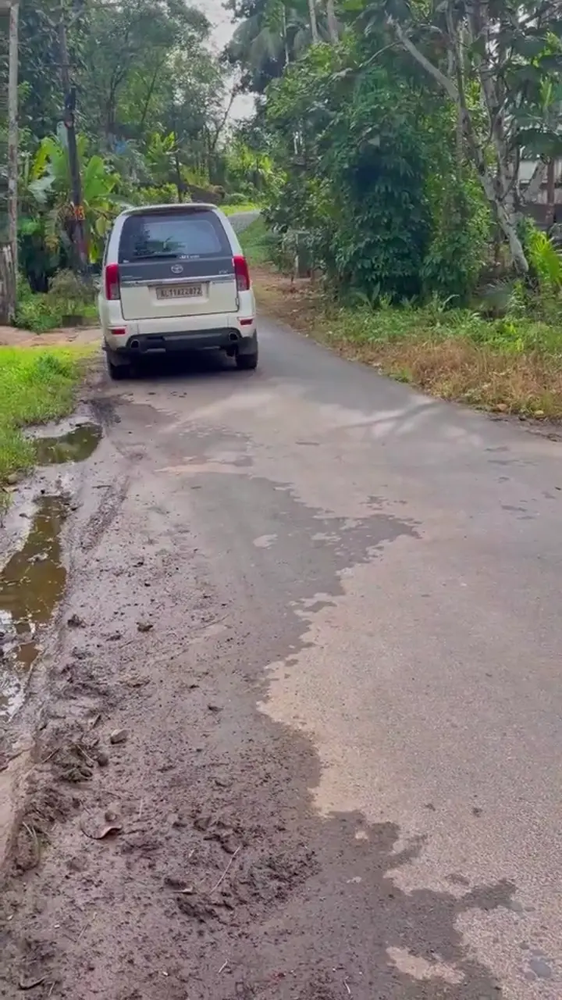
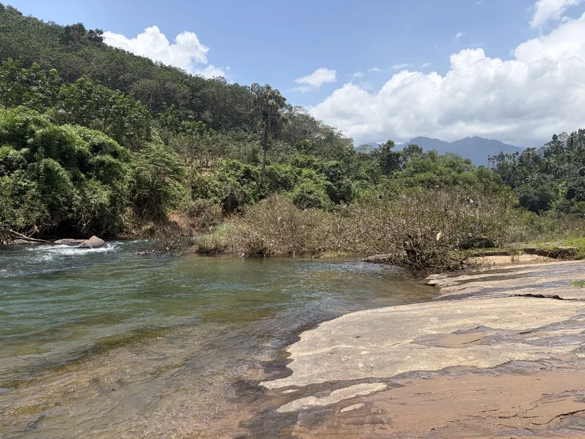
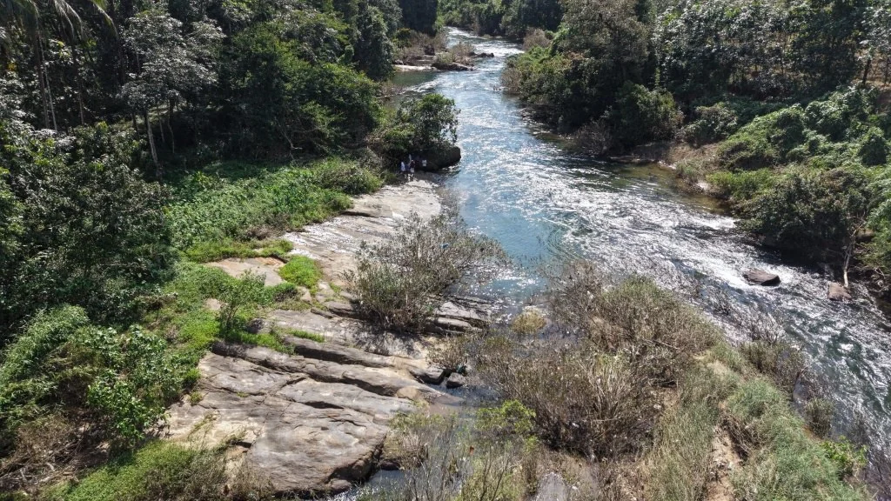
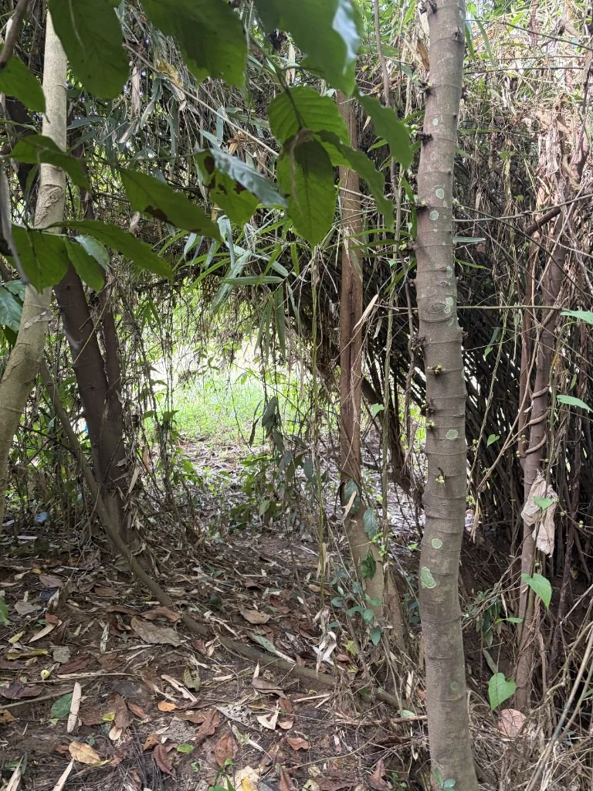
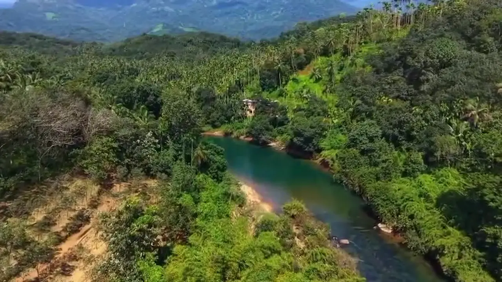

▶
Approach & drive
Drive into the enclave
Follow the motorable approach into the property.

A private riverside community in Athipara, shaped by flowing water, tropical greenery and the freedom to create a retreat of your own.
Nestled in the verdant foothills of Athipara near Thiruvambady, Neeranjali combines waterfront access, low-density planning and a flexible path to building a personal Kerala retreat.
Iravanji puzha and an adjacent perennial water stream.
Nine carefully demarcated plots with privacy and green breathing space.
Bespoke holiday villas, eco-cottages or traditional Kerala homes.
Motorable access with nearby town and city connectivity.


Watch the approach and drive into the property, then see the river landscape from above.

Follow the motorable approach into the property.

“River, stream and greenery—without the feeling of a crowded development.”
Explore the complete visual story in the gallery.
Open gallery →